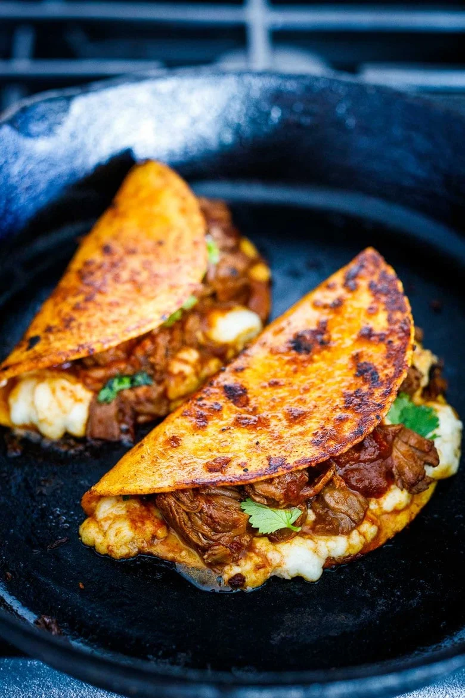

An Authentic Mexican Birria Recipe sourced from Feasting at Home.
Ingredients
- 4–6 dried chilies- guajillo chiles, pasilla, ancho- stems and seeds removed- see notes.
- 3 lbs beef stew meat (or lamb or goat) cut into 1 1/2-inch pieces – chuck roast, beef shoulder, lamb leg, lamb shoulder.
- Salt and pepper to taste (roughly 1 teaspoon salt per pound of meat)
- 1–2 tablespoons olive oil
- 1 large onion, diced
- 6 garlic cloves, roughly chopped
- 1/4 teaspoon ground cloves
- 1/4 teaspoon ground allspice
- 1 teaspoon cumin
- 2 teaspoons coriander
- 1 teaspoon chili powder
- 2 teaspoons dried oregano
- 2 bay leaves
- 1 cinnamon stick ( or sub 1/4 teaspoon cinnamon)
- Optional- 14-ounce can of diced tomatoes or 1 cup fresh, diced tomatoes
- 3 cups beef stock (or chicken stock)
- 1–2 teaspoons apple cider vinegar, optional
- Optional additions: 3-inch piece orange zest, 1-2 chipotle chiles (or 2-3 tablespoons adobo sauce sauce from the can)

Steps
- Toast the chilies in a dry skillet, being careful not to burn. This will allow them to release their oils. Cover with water, bring to a boil, and let simmer and soften until you are ready to add them to the stew. Drain the water and remove the seeds.
- Season the meat generously with salt and pepper and brown it in a large skillet over medium-high heat. Set it aside. (If you are in a hurry, you can skip the browning step and add it raw to the stew, but browning makes it more flavorful.)
- Heat oil in an Instant pot on the saute setting (or large Dutch oven over medium heat) and add onion and garlic, stirring and sauteing until fragrant, tender, and golden. Once softened and golden, add all the spices: cloves, allspice, cumin, coriander, chili powder, oregano, bay leaves, and cinnamon– and saute for 2 minutes, toasting them. Add the optional tomatoes and the beef stock. Stir and scrape up any browned bits.
- Add the browned meat and stir.
- Add the softened chilies on top.
- INSTANT POT: Set the instant pot to 45 minutes on high pressure. Let it naturally release.
- Dutch Oven:If using a dutch oven, cover tightly, and simmer gently on the stovetop, on low heat for 2 1/2 to 3 hours, until meat is very tender. Stir every hour. (Alternativly bake in a 350F oven).
- SLOW COOKER: Place this in a slow cooker on low for 8 hours.
- Optional: Once the meat is tender, fish out the chilies, and blend with a cup of the warm broth in a blender until pureed. Return to the pot, stirring it in. Shred the meat with two forks. You can also just leave the chilies whole.
- Season: Taste and season, adding a teaspoon or two of vinegar and adjusting salt and pepper to taste. If it tastes bland, it likely needs salt.
- Make Birria Tacos: Dip tortillas into the rich broth, lightly coating each side and place in a greased skillet, over medium heat, top with cheese, birria stew meat, and any fixings. Fold the over ( like a quesadilla) and pan-sear each side until crispy. Keep warm in the oven until serving.
Notes
- Chilies: Use dry mild chilies like Guajillo and Pasilla Chiles to add flavor and depth – but not too much heat. (Feel free to use other dried chilies, paying attention to heat level.) Add Chipotle for more heat and smoky flavor. If you want a milder stew, I suggest using only Guajillos (like 6). You can always add more spice at the end (cayenne, chili flakes, chipotle powder) if not sure. Using dried chilies really makes this dish, but they must be toasted and simmered to remove bitterness.
- If you prefer a brothier stew, you can always add more chicken or beef broth at the end of cooking, seasoning with a little more salt.
- Tomatoes: I have made this with and without tomatoes. Both are delicious. I almost prefer this without.
- MEAT: I used a mixture of lamb and beef. Tougher cuts of meat work great here like stew meat. Shoulder, shank, leg, etc. Goat meat is traditional.
- To Remove Fat: Make the stew ahead and cool – the fat will solidify at the top and then can be easily removed.